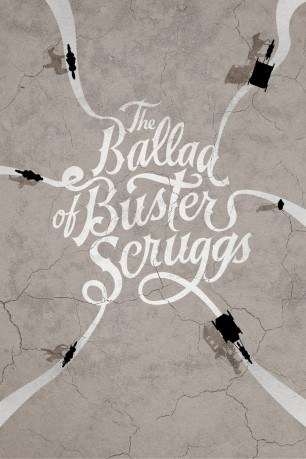

#10007 The Ballad of Buster Scruggs
 
 IMDB-Wertung: 7.4 / 10
IMDB-Wertung: 7.4 / 10  Metascore: 78
Metascore: 78 
Die Handlung jeder einzelnen der sechs Episoden ist in sich abgeschlossen und behandelt einen anderen Aspekt des Wilden Westens. Ein Schwerpunkt liegt dabei auf der Annahme, dass jeder Buster Scruggs sein könnte.
Jahr: 2018
Dauer: 133 Minuten
FSK: 16
Land: USA Studio: NetflixTonspuren: DD5.1 - ,
Untertitel: Deutsch, Englisch,
Auflösung: 1080p (1920x1080) Größe: 6113 MB
Genre: Drama, Komödie, Western, Liebe, Mystery, Musical
Regisseur:  Ethan Coen,
Ethan Coen,  Joel Coen
Joel Coen
Drehbuch: Joel Coen, Ethan Coen, Jack London, Stewart Edward White
Soundtrack: Carter Burwell
Darsteller:
 Tim Blake Nelson als Buster Scruggs (segment The Ballad of Buster Scruggs)
Tim Blake Nelson als Buster Scruggs (segment The Ballad of Buster Scruggs) Clancy Brown als Curly Joe (segment The Ballad of Buster Scruggs)
Clancy Brown als Curly Joe (segment The Ballad of Buster Scruggs) Danny McCarthy als Curly Joe's Brother (segment The Ballad of Buster Scruggs)
Danny McCarthy als Curly Joe's Brother (segment The Ballad of Buster Scruggs) David Krumholtz als Frenchman (segment The Ballad of Buster Scruggs)
David Krumholtz als Frenchman (segment The Ballad of Buster Scruggs) Tim DeZarn als Mean-Eyed Card Player (segment The Ballad of Buster Scruggs)
Tim DeZarn als Mean-Eyed Card Player (segment The Ballad of Buster Scruggs) E.E. Bell als Piano Player (segment The Ballad of Buster Scruggs)
E.E. Bell als Piano Player (segment The Ballad of Buster Scruggs) Alejandro Patiño als Cantina Bartender (segment The Ballad of Buster Scruggs)
Alejandro Patiño als Cantina Bartender (segment The Ballad of Buster Scruggs) Tom Proctor als Cantina Bad Man (segment The Ballad of Buster Scruggs)
Tom Proctor als Cantina Bad Man (segment The Ballad of Buster Scruggs) Matthew Willig als Cantina Scum (segment The Ballad of Buster Scruggs)
Matthew Willig als Cantina Scum (segment The Ballad of Buster Scruggs)- J.J. Dashnaw als Cantina Scum (segment The Ballad of Buster Scruggs)
 James Franco als Cowboy (segment Near Algodones)
James Franco als Cowboy (segment Near Algodones) Stephen Root als Teller (segment Near Algodones)
Stephen Root als Teller (segment Near Algodones) Ralph Ineson als Posse Leader (segment Near Algodones)
Ralph Ineson als Posse Leader (segment Near Algodones) Mike Watson als Posse #1 (segment Near Algodones)
Mike Watson als Posse #1 (segment Near Algodones) Brian Brown als Posse #2 (segment Near Algodones)
Brian Brown als Posse #2 (segment Near Algodones)- Richard Bucher als Posse #4 (segment Near Algodones)
 Jesse Luken als Drover (segment Near Algodones)
Jesse Luken als Drover (segment Near Algodones)- Austin Rising als Bailiff (segment Near Algodones)
 Liam Neeson als Impresario (segment Meal Ticket)
Liam Neeson als Impresario (segment Meal Ticket)- Jiji Hise als Bawd (segment Meal Ticket)
 Paul Rae als Chicken Impressario (segment Meal Ticket)
Paul Rae als Chicken Impressario (segment Meal Ticket) Tom Waits als Prospector (segment All Gold Canyon)
Tom Waits als Prospector (segment All Gold Canyon) Sam Dillon als Young Man (segment All Gold Canyon)
Sam Dillon als Young Man (segment All Gold Canyon)- Bill Heck als Billy Knapp (segment The Gal Who Got Rattled)
 Zoe Kazan als Alice Longabaugh (segment The Gal Who Got Rattled)
Zoe Kazan als Alice Longabaugh (segment The Gal Who Got Rattled) Grainger Hines als Mr. Arthur (segment The Gal Who Got Rattled)
Grainger Hines als Mr. Arthur (segment The Gal Who Got Rattled) Jefferson Mays als Gilbert Longabaugh (segment (The Gal Who Got Rattled)
Jefferson Mays als Gilbert Longabaugh (segment (The Gal Who Got Rattled)- Prudence Wright Holmes als Boarding House Lady (segment (The Gal Who Got Rattled)
 Jackamoe Buzzell als Boarder #3 (segment The Gal Who Got Rattled)
Jackamoe Buzzell als Boarder #3 (segment The Gal Who Got Rattled)- Ethan Dubin als Matt (segment The Gal Who Got Rattled)
- Thea Lux als His Mother (segment (The Gal Who Got Rattled)
- Jonjo O'Neill als Englishman (segment The Mortal Remains)
 Brendan Gleeson als Irishman (segment The Mortal Remains)
Brendan Gleeson als Irishman (segment The Mortal Remains) Saul Rubinek als Frenchman (segment The Mortal Remains)
Saul Rubinek als Frenchman (segment The Mortal Remains) Tyne Daly als Lady (segment The Mortal Remains)
Tyne Daly als Lady (segment The Mortal Remains) Chelcie Ross als Trapper (segment The Mortal Remains)
Chelcie Ross als Trapper (segment The Mortal Remains) Harry Melling als Artist (segment Meal Ticket)
Harry Melling als Artist (segment Meal Ticket)- Katy Bodenhamer als Milkmaid (segment The Gal Who Got Rattled) (uncredited)
- Stephen R. Estler als Gambler (segment The Ballad of Buster Scruggs) (uncredited)
- Bill Foster als Saloon man (segment The Ballad of Buster Scruggs) (uncredited)
 Billy Lockwood als Father (segment The Gal Who Got Rattled) (uncredited)
Billy Lockwood als Father (segment The Gal Who Got Rattled) (uncredited)- Nick A. Meyers als Gallows Watchers #1 (segment The Ballad of Buster Scruggs) (uncredited)
 Martin Palmer als Blubberer (segment Near Algodones) (uncredited)
Martin Palmer als Blubberer (segment Near Algodones) (uncredited)- Christian Pedersen als Saloon Patron (segment The Ballad of Buster Scruggs) (uncredited)
- Skyler Pinkerton als Saloon Patron (segment The Ballad of Buster Scruggs) (uncredited)
 Michael Neal Powell als Townsman #2 (segment Meal Ticket) (uncredited)
Michael Neal Powell als Townsman #2 (segment Meal Ticket) (uncredited)- Diego Romero als Townsman #1 (uncredited)
 J. Nathan Simmons als Gallows Watcher (segment The Ballad of Buster Scruggs) (uncredited)
J. Nathan Simmons als Gallows Watcher (segment The Ballad of Buster Scruggs) (uncredited)- Willie Watson als The Kid (segment The Ballad of Buster Scruggs)
- Thomas Wingate als Gun Check Man (segment The Ballad of Buster Scruggs)
Datei: X:\HD-Western-2000-2015\Ballad of Buster Scruggs, The (2018, FSK16, 1920x1080).mkv seit 20.11.2018
Festplatte: HD Eastern+Western
 Es gibt insgesamt 61 Filme in der Gruppe 'HD-Western-2000-2015'
Es gibt insgesamt 61 Filme in der Gruppe 'HD-Western-2000-2015'